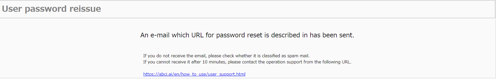
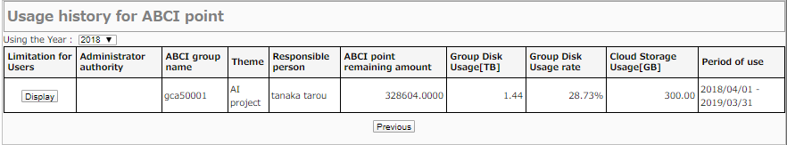

2. User Portal
The functions described in this chapter are available for responsible persons and users. Responsible persons and users who are granted the user administrator authority can use the functions described in User Administrator Authority.
2.1. Login
Access ABCI User Portal.
Enter your ABCI account name and the number of 6 characters in the image, and click the "Next" button. If you cannot read numbers, click the "Reload" button to change the image.
The URL for login will be notified to your e-mail address. Launch your favorite browser and copy/paste the URL.
2.1.1. Declaration for the Applicability of the Specific Categories (for the first time in a fiscal year)
Warning
You will not be able to use ABCI until your declaration is approved.
![[[Screenshot]]](../img/2_02_A.png)
Enter your ABCI account and a Special Temporary Password, and click the "Login" button.
Note
This is a Special Temporary Password for User login for Declaration for the Applicability of the Specific Categories.
Note
the Applicability of the Specific Categories
https://abci.ai/news/2023/04/07/en_deemed_export.html
Click the "Declare" button to change the image.
The URL for login will be notified to your e-mail address. Launch your favorite browser and copy/paste the URL.
Note
If the URL expires, please access the ABCI User Portal and reissue the login URL.
2.1.2. First Login
Enter your ABCI account and password, and click the "Login" button.
Note
Please visit the following URL to login for the "Declaration for the Applicability of the Specific Categories" (for the first time in a fiscal year).
A Special Temporary Password is issued, which is different from the normal login. Please be careful.
If your password has expired, please "2.2. User Password Reissue".
![[[Screenshot]]](../img/2_04.png)
When you login for the first time, the link to the terms of use is displayed. Refer to the terms of use and click the "I agree with all and move to the next" button if you agree.
Note
Please refer to the following URL for documenation of "terms of use."
https://abci.ai/en/link/download_etc.html
Please refer to the following URL for documenation of "Joint Research with AIST".
https://abci.ai/en/how_to_use/
If the terms of use are amended, a confirmation screen may be displayed again.
![[[Screenshot]]](../img/2_05.png)
Enter current password and new password, and click the "Change" button. When the dialog box is displayed, click the "OK" button.
![[[Screenshot]]](../img/2_06.png)
When password is changed successfully, the screen for password change completion will be displayed. Click the "TOP menu" button.
2.2. User Password Reissue
Access ABCI User Portal.
Enter your ABCI account name and the number of 6 characters in the image, and click the "Next" button. If you cannot read numbers, click the "Reload" button to change the image.
The URL for login will be notified to your e-mail address. Launch your favorite browser and copy/paste the URL.
If you have forgotten your password, click the link at the bottom left "Click here if you have forgotten your password".
Enter your ABCI account name and the number of 6 characters in the image, and click the "Next" button. If you cannot read numbers, click the "Reload" button to change the image.

The URL for login will be notified to the registered e-mail address.
A temporary password is also notified in a separate notification from the URL notification.
Launch your favorite browser and copy/paste the URL, and log in.
2.3. Change Password
Click the "Change Password" from the side menu.
Enter current password and new password, and click the "Change" button. When the dialog box is displayed, click the "OK" button.
![[[Screenshot]]](../img/2_08.png)
When password is changed successfully, the screen for password change completion will be displayed.
2.4. Register Public Key
Up to 10 public keys can be registered. Click the "Register Public Key" from the side menu.
2.4.1. Direct Input
Select the "Direct input".
Enter your public key in the text area and click the "Register" button.
Note
If your public key is PuTTY style, convert to OpenSSH style with PuTTYgen and enter it.
2.4.2. File Upload
Select the "File Upload".
Select your public key.
Note
The public key of PuTTY style is not supported.
2.4.3. Registration Completion
When clicking the "Register" button, the dialog box will be displayed. Click the "OK" button in the dialog box.
When public key is registered successfully, the screen for public key registration completion will be displayed.
2.5. Browse / Delete Public Key
Click the "Browse / delete public key" from the side menu.
![[[Screenshot]]](../img/2_12.png)
When checking the checkbox from the list of public keys and click the "Delete" button, the dialog box will be displayed. Click the "OK" button in the dialog box.
![[[Screenshot]]](../img/2_13.png)
When public key is deleted successfully, the screen for public key deletion completion will be displayed.
2.6. Node Reservation / Cancellation
Select the "Node reservation / cancellation" on the side menu.
![[[Screenshot]]](../img/2_15.png)
The list of node reservations is displayed.
Warning
After the time that cannot cancel the reservation (9:00 p.m. the day before the start date), you cannot see the reservation information on the ABCI User Portal.
Please use the qrstat command for the recent reservation that cannot be canceled.
2.7. Usage History for ABCI Point
Click the "Usage history for ABCI point" on the side menu.

2.7.1. Display Usage
Click the "Display" button of group information from the list.
![[[Screenshot]]](../img/2_17.png)
The usage of ABCI point is displayed.
2.7.2. Display Usage History
Click the "More Detail" button on the screen.
The monthly ABCI point usage is displayed.
Note
- Job means Total ABCI point usage of On-demand, Spot, and Reserved Services.
- The point usage of the job of Spot/On-demand service which executed across months is counted in the month in which the job was submitted. The repayment process after the end of the job is also performed for the point usage of the month in which the job was submitted.
- The points usage of the Reserved service are counted in the month in which the reservation was made. If you cancel the reservation, it will be returned to the points used in the month you made the reservation.
2.8. Cloud Storage Usage
Click the "Cloud Storage Management" on the side menue.
![[[Screenshot]]](../img/2_19.png)
The list of available ABCI groups is displayed.
2.8.1. Manage ABCI Cloud Storage account
Click "Manage CS Account" button on the screen.
2.8.1.1. Add ABCI Cloud Storage account
Click "Add CS Account" button on the screen.
![[[Screenshot]]](../img/2_21.png)
Refer to the terms of use and click the "I agree with all and move on to the next" button if you agree.
Note
Please refer to the following URL for documenation of "terms of use."
https://abci.ai/en/link/download_etc.html
![[[Screenshot]]](../img/2_22.png)
A screen appears that the new account has been created. Click "To CS Account list" button on the screen.
2.8.2. Manage Access key
When Cloud Storage account is created, "Access Key Management" button is displayed in the operation column each Cloud Storage account.
![[[Screenshot]]](../img/2_23.png)
Click "Manage access key" button on the screen.
![[[Screenshot]]](../img/2_24.png)
Secret access keys can be controlled on this screen, such as issued, delete and reissue.
2.8.2.1 Create New Access Key
Click "issue a new access key" button on the screen, and dialog box appear. Click "OK" button.
A screen appears that the new access key has been issued. Click "To access key manegement"
2.8.2.2. Delete Access Key
![[[Screenshot]]](../img/2_26.png)
Click "Delete" button which you want to delete, and click "OK" on the dialog box.
![[[Screenshot]]](../img/2_27.png)
When the access key has been deleted, access key management screen appears.
2.8.2.3. Reissue Access Key
Click "Reissue" button which you want to reissue, and click "OK" on the dialog box.
Click "To access key management" button on the screen.
Access key management screen is displayed.
2.9. Declaration for the Applicability of the Specific Categories
Click the "Declaration for the Applicability of the Specific Categories" from the side menu. Please follow the instructions on the screen to make a declaration.
Note
the Applicability of the Specific Categories
https://abci.ai/news/2023/04/07/en_deemed_export.html
Click "Declare" button on the screen.